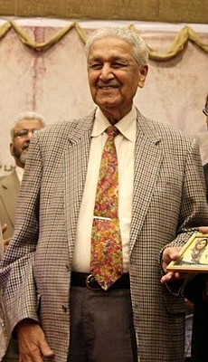
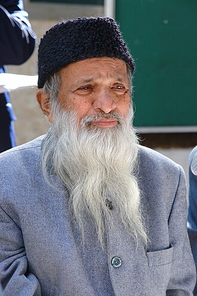

Favorite Personalities

Muhammad Ali Jinnah
Muhammad Ali Jinnah was a barrister, politician and the founder of Pakistan. Jinnah served as the leader of the All-India Muslim League from 1913 until the inception of Pakistan on 14 August 1947, and then as the Dominion of Pakistan's first governor-general until his death.

Abdul Qadeer Khan
Abdul Qadeer Khan, known as A. Q. Khan, was a Pakistani nuclear physicist and metallurgical engineer who is colloquially known as the "father of Pakistan's atomic weapons program".

Abdul Sattar Edhi
Abdul Sattar Edhi was a Pakistani humanitarian, philanthropist and ascetic who founded the Edhi Foundation, which runs the world's largest ambulance network, along with homeless shelters, animal shelters, rehabilitation centres, and orphanages across Pakistan.